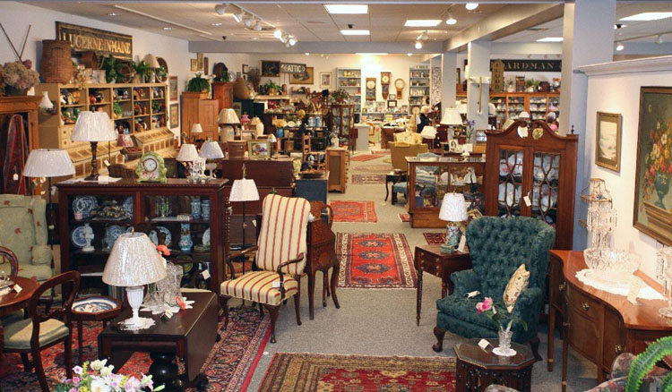

|
Mid-Coast FINE ANTIQUES of Maine is Maine's foremost source of fine antiques, featuring period, formal, and country furniture in addition to iron and wicker furniture. All of our furniture is ready for your home or summer cottage.  Our expansive new showroom enables us to display 24 room arrangements of antique 18th and 19th century pieces ranging from the elegance of formal mahogany to the simplicity of Adirondack style furnishings, coupled with a vast variety of antique accessories and art. With respect to our restored upholstered pieces, we strongly believe our choices of fabric treatments are distinctively different – “a step away from the norm.” Many have asked: do we sell on the internet? We do not have a “web store front”, however if you see something in one of the photos of the shop that “catches your eye”, we would be happy to take additional photos, provide descriptions, dimensions, condition and prices via email. We offer a wide range of restored, upholstered pieces to include: loveseats, sofa, wing chairs, and settees. The circa of the pieces range from 75 to 200 years of age. Each piece was made in an era when furniture makers took pride in their craftsmanship. In restoring our upholstered pieces we maintain the same approach used by the craftsmen of the past – and are proud of it! In the restoration section of our business, we initially remove the used upholstery, actually disassemble the frame if it has loose joints, remove all old glue, then re-glue to restore the piece to its original, structural integrity. Next we restore the original finish when possible otherwise we remove the old finish, stain, refinish the piece and finally reupholster. When the upholstered pieces enter our shop – they are as they were 100+ years ago – structurally sound, and - simply elegant. The following photos will give you an overview of the type of antique furniture and accessories that we offer. These photos consist of both past and current inventory.
DURING THE 2024 SEASON THE RETAIL SHOP THURSDAYS, 9 AM TO 2 PM FRANCINE WILL BE DOING ALSO ON THURSDAYS FRANCINE WILL BE THANK YOU FOR YOUR UNDERSTANDING |